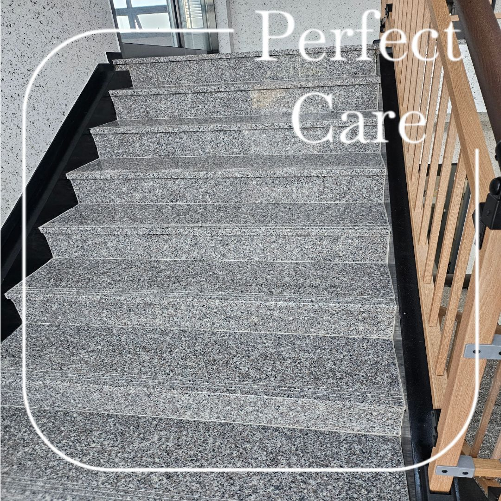
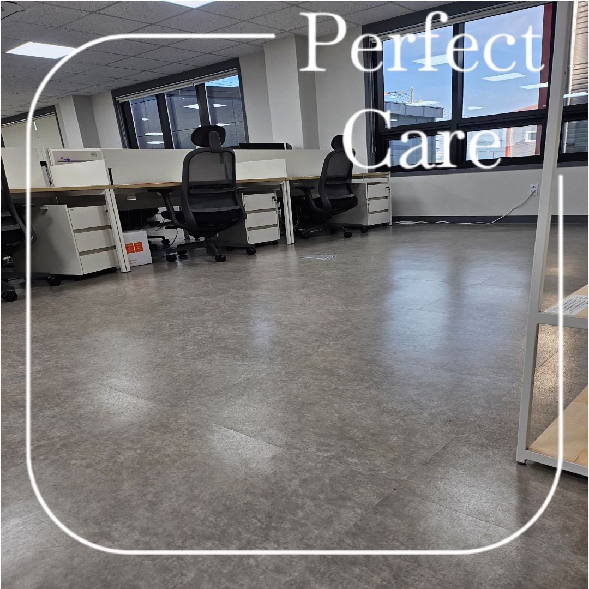
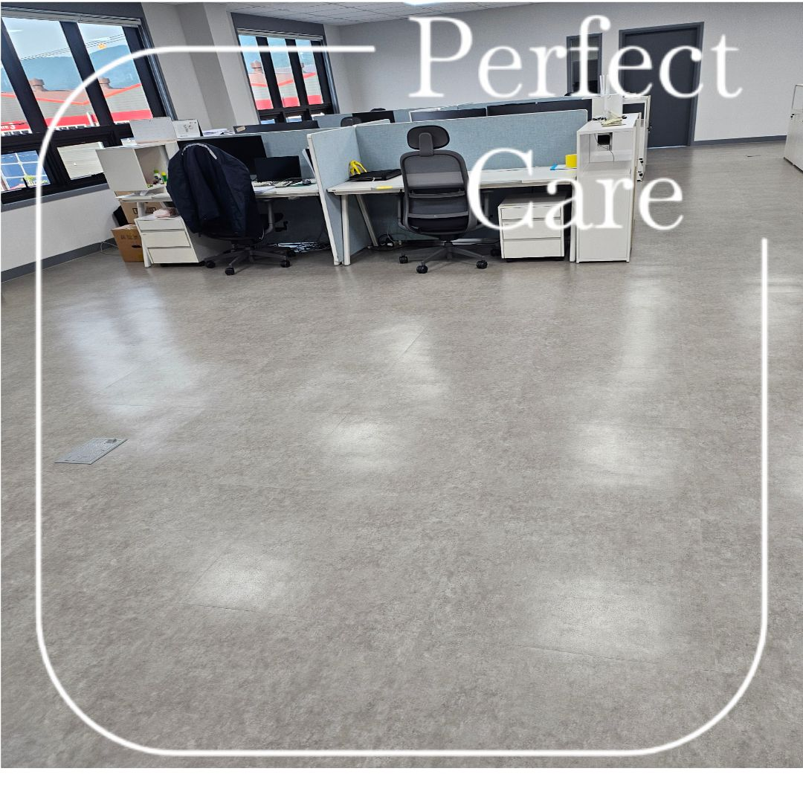
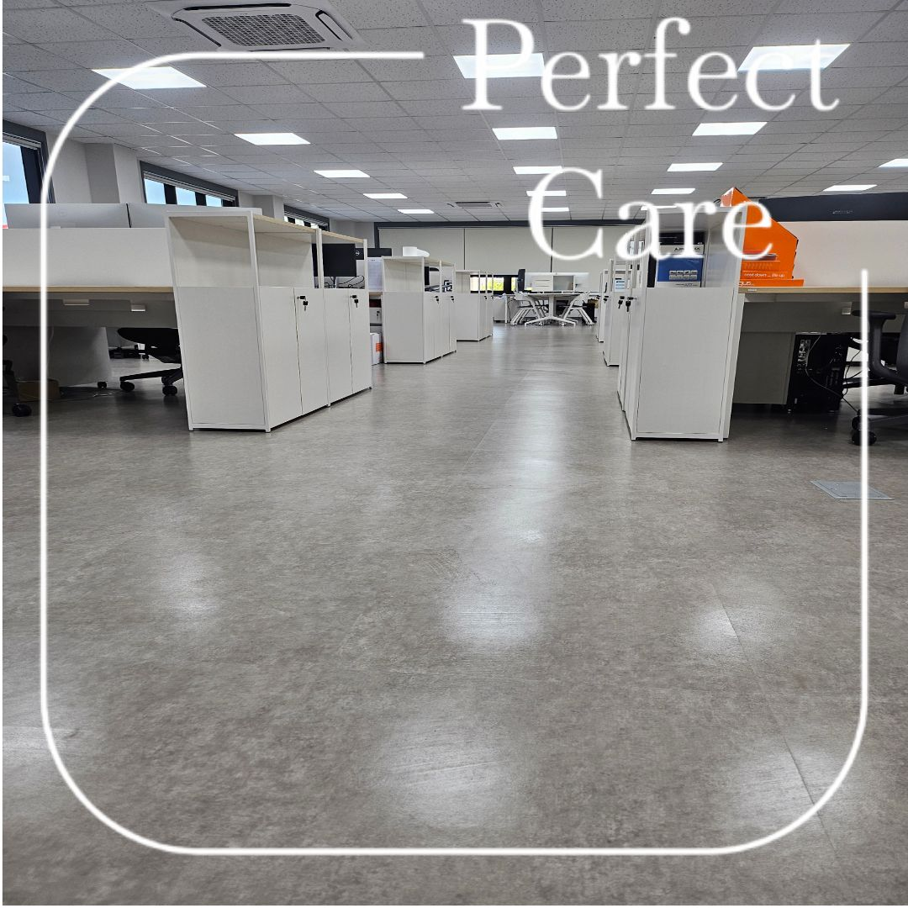
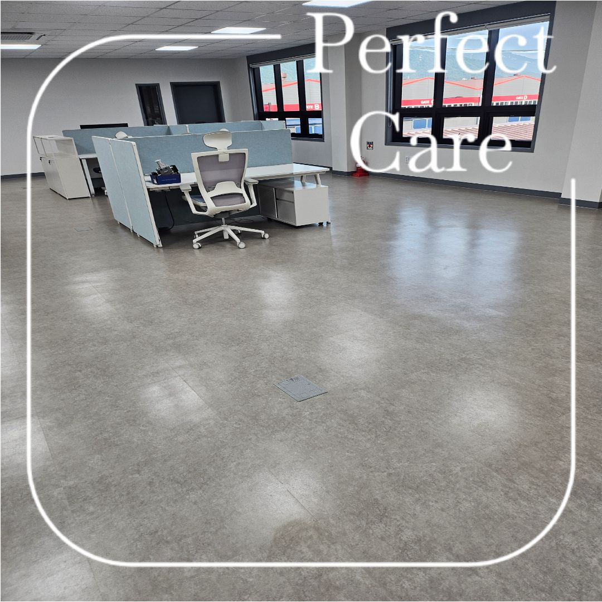
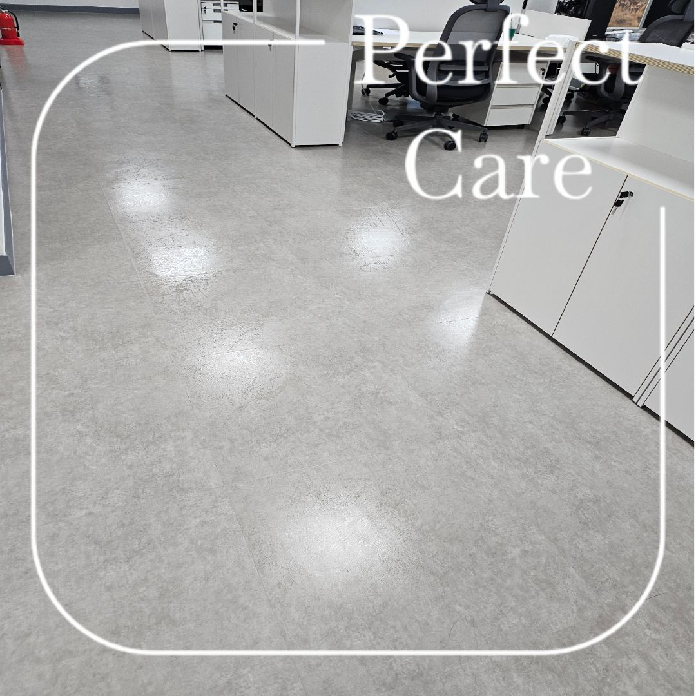
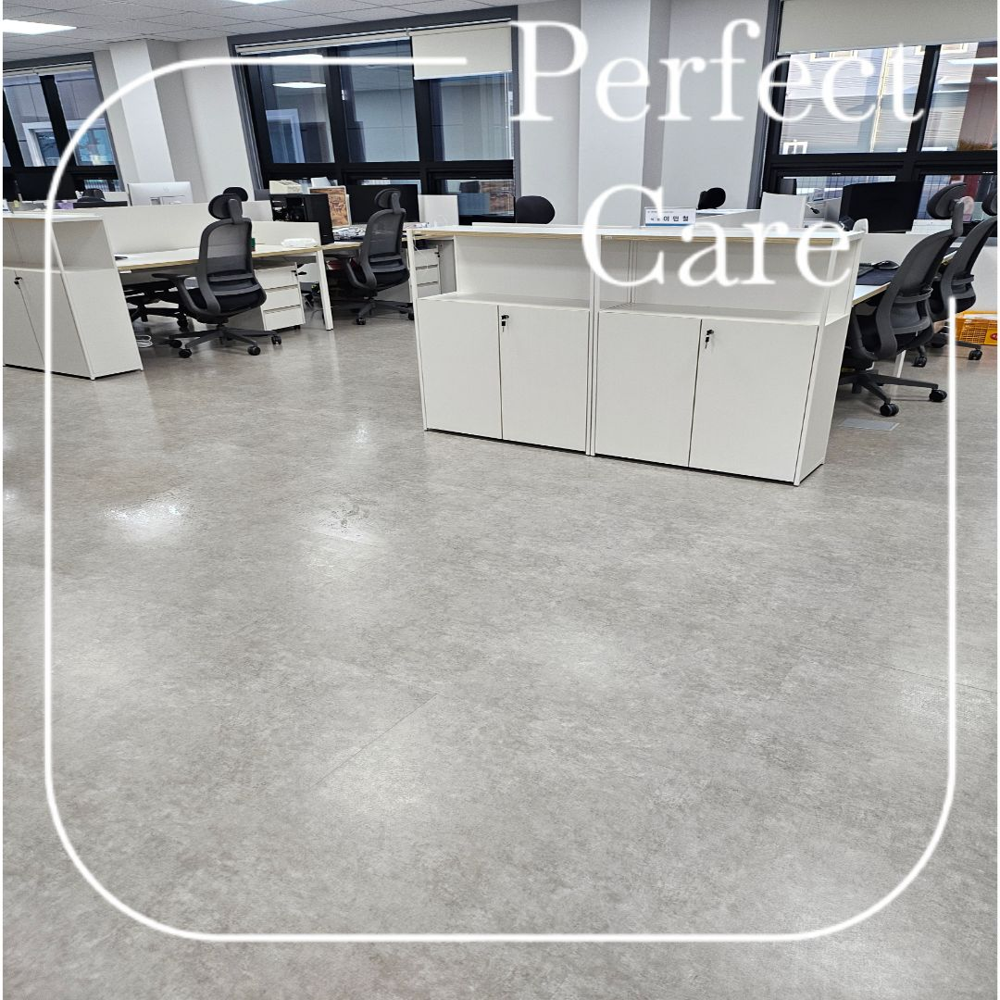
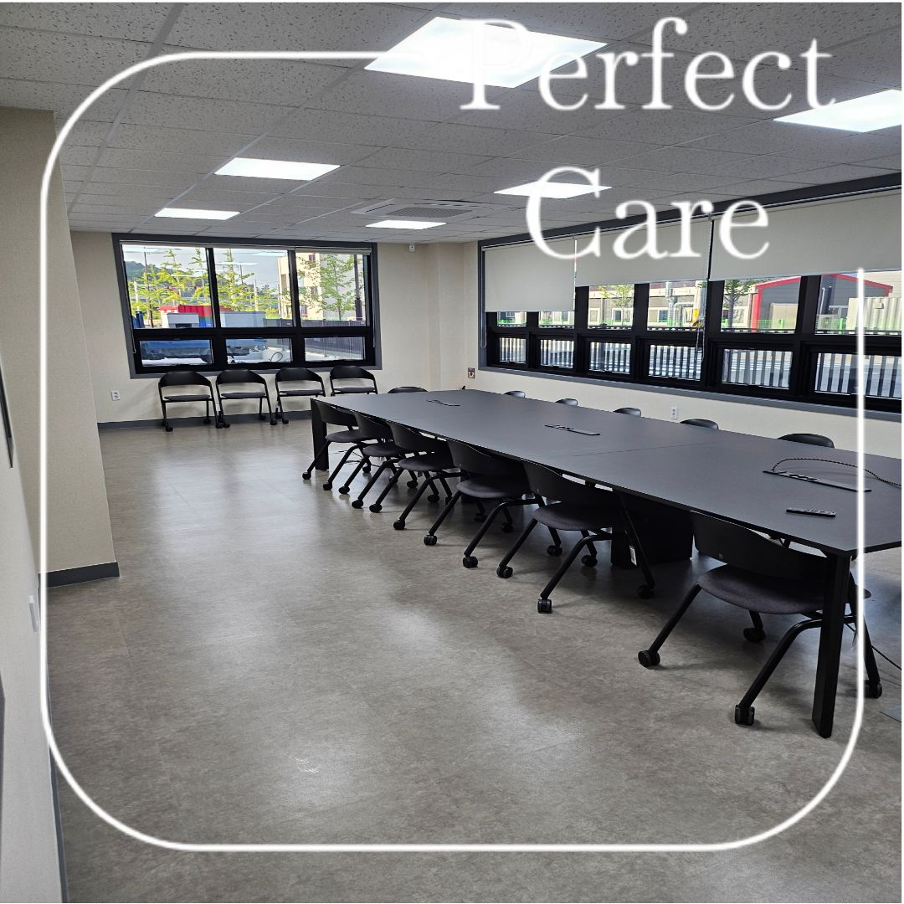
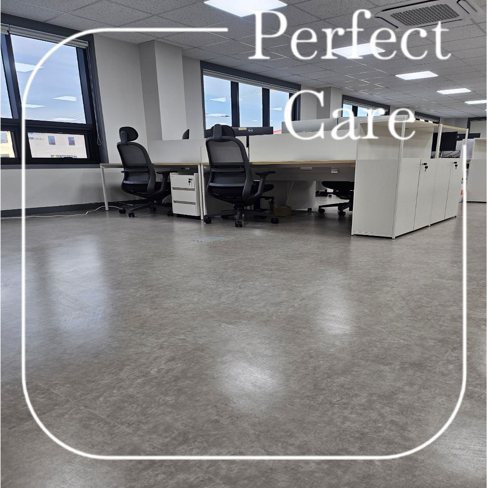

김해 대동산단 실제 기업체 정기청소 현장
이번 현장은 김해 대동산단에 위치한 기업체입니다. 사무공간과 공용부, 화장실처럼 직원들이 매일 사용하는 구역은 한 번의 대청소보다 일정한 주기로 관리하는 것이 중요합니다.
퍼펙트케어는 사업장 규모, 직원 수, 방문객 수, 운영시간, 바닥 오염 정도와 화장실 이용량을 함께 확인해 필요한 관리 범위를 정합니다.

사무공간과 공용부를 함께 관리



정기청소는 현장마다 관리 횟수가 달라집니다
같은 공장과 사무실이라도 직원 수와 출입량, 바닥 재질, 운영시간에 따라 오염 속도가 다릅니다. 따라서 단순 면적만 보고 횟수를 정하기보다 실제 현장을 확인해 관리주기를 잡는 것이 좋습니다.
퍼펙트케어의 사업장 정기청소는 현장 상황에 따라 주 1회부터 주 6회까지 상담 가능합니다.

김해 대동산단 정기청소 작업사진



화장실은 별도 관리가 필요한 공간입니다
기업체 화장실은 사용량이 많아 세면대, 변기, 소변기, 바닥과 배수구 주변에 오염이 빠르게 쌓일 수 있습니다. 정기청소 범위에 화장실을 포함하면 사업장 전체의 관리 상태를 일정하게 유지하기 좋습니다.

대동산단 기업체 정기청소 무료 방문견적
관리 횟수는 사업장 규모와 직원 수, 방문객 수, 운영시간, 바닥 오염 정도, 화장실 이용량과 관리 범위를 확인해 정합니다. 퍼펙트케어는 김해 대동산단을 포함한 김해 지역 기업체 정기청소를 상담합니다.
사무실
화장실
복도·계단
공용부
김해 대동산단 정기청소 상담
현장을 확인한 뒤 필요한 관리 범위와 주기를 안내드립니다. 대량건도 문제없습니다.